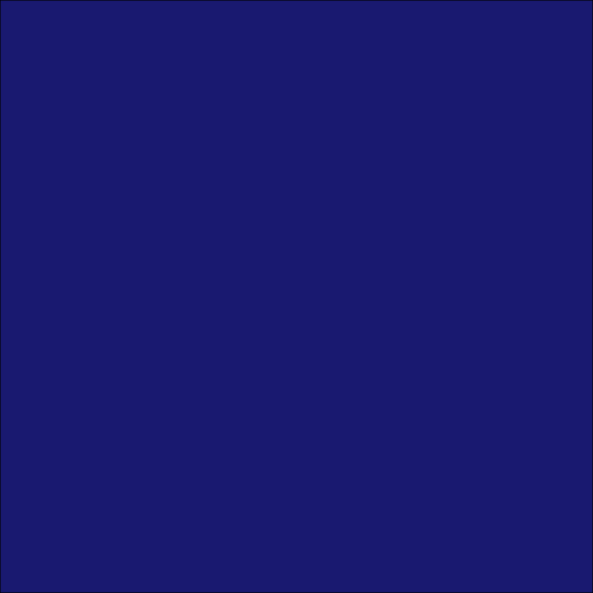
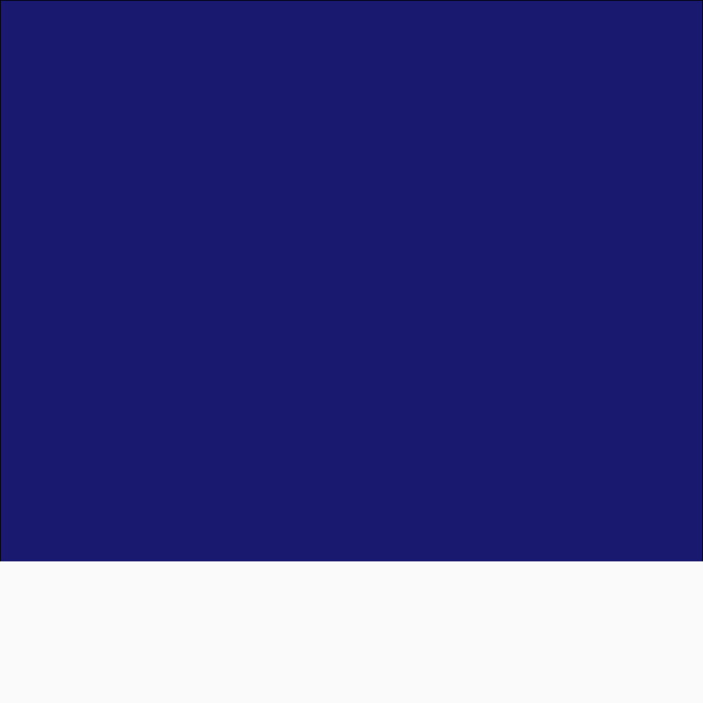

Oxford R User Group Mariagrazia
The tutorial uses the R programming language. In particular, the code relies on the following packages:
library(ggplot2)
library(ggforce)
library(sf)Existing Christmas R packages
library(christmas) xmasepitree(year = 2023)
Emil Hvitfeld snow Quarto extension
Let’s build a snowman!
Before we jump in to writing R code, let’s take a step back and think about what you actually need to build a snowman. If I gave you some crayons and a piece of paper, what would you draw?
This is a useful approach to all charts
You might draw two or three circles to make up the head and body. Perhaps some smaller dots for buttons and eyes, and a (rudimentary) hat constructed from some rectangles. … and of course, a triangle to represent a carrot for a nose.
Now lines, rectangles, circles, and triangles are all just simple geometric objects. Crucially, they’re all things we can create with {ggplot2} in R. Let’s start by setting the scene. For the background elements of our Christmas cards, we need the night sky (or day if you prefer), a light dusting of snow covering the ground, and a few snowflakes falling from the sky. Let’s start with the background.
The easiest way to … create an empty plot with no data using ggplot() with no arguments, remove all theme elements with theme_void() and then
run colors() to see all the options
s1 <- ggplot() +
theme_void() +
theme(
plot.background = element_rect(
fill = "midnightblue"
)
)
s1Now let’s add some snow…
s2 <- s1 +
annotate(
geom = "rect",
xmin = 0, xmax = 1,
ymin = 0, ymax = 0.2,
fill = "gray98",
colour = "gray98"
) +
xlim(0, 1) +
ylim(0, 1) +
coord_fixed(expand = FALSE)
s2

and some snowflakes!
set.seed(20231225)
n <- 100
snowflakes <- data.frame(
x = runif(n),
y = runif(n)
)
s3 <- s2 +
geom_point(
data = snowflakes,
mapping = aes(
x = x,
y = y
),
colour = "white",
pch = 8
)
s3Now comes the part where we … , Or in the case of …, draw some circles. Build the snowman!
s4 <- s3 +
geom_circle(
data = data.frame(
x0 = c(0.6, 0.6),
y0 = c(0.3, 0.5),
r = c(0.15, 0.1)
),
mapping = aes(x0 = x0, y0 = y0, r = r),
fill = "white",
colour = "white"
)
s4Add some rocks for buttons and eyes…
s5 <- s4 +
geom_point(
data = data.frame(
x = c(0.6, 0.6, 0.6, 0.57, 0.62),
y = c(0.25, 0.3, 0.35, 0.52, 0.52),
size = runif(5, 2, 4.5)
),
mapping = aes(x = x, y = y, size = size)
) +
scale_size_identity()
s5… and sticks for arms …
s6 <- s5 +
annotate(
geom = "segment",
x = 0.7, xend = 0.85, y = 0.3, yend = 0.4,
colour = "chocolate4",
lineend = "round",
linewidth = 2
) +
annotate(
geom = "segment",
x = 0.46, xend = 0.33, y = 0.3, yend = 0.4,
colour = "chocolate4",
lineend = "round",
linewidth = 2
)
s6and a hat!
s7 <- s6 +
annotate(
geom = "rect",
xmin = 0.46, xmax = 0.74,
ymin = 0.55, ymax = 0.60,
fill = "brown"
) +
annotate(
geom = "rect",
xmin = 0.50, xmax = 0.70,
ymin = 0.56, ymax = 0.73,
fill = "brown"
)
s7Create a carror for a nose with {sf}…
nose_pts <- matrix(
c(
0.6, 0.5,
0.65, 0.48,
0.6, 0.46,
0.6, 0.5
),
ncol = 2,
byrow = TRUE
)
nose <- st_polygon(list(nose_pts))
plot(nose)… and add it to the snowman
s8 <- s7 +
geom_sf(
data = nose,
fill = "orange",
colour = "orange"
) +
coord_sf(expand = FALSE)
s8Finally add a Christmas message!
s9 <- s8 +
annotate(
geom = "text",
x = 0.5, y = 0.07,
label = "Merry Christmas",
colour = "red3",
family = "mono",
fontface = "bold", size = 7
)
s9Sending Christmas cards in R
emails
{blastula}: a package for creating and sending HTML emails from R.
{gmailR}: a package for sending emails via the Gmail’s RESTful API.
{RDCOMClient}: a Windows-specific package for sending emails in R from the Outlook app.
… and several other email R packages!
ggirl
final thoughts